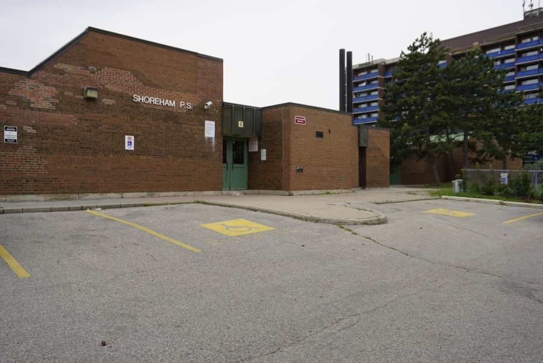
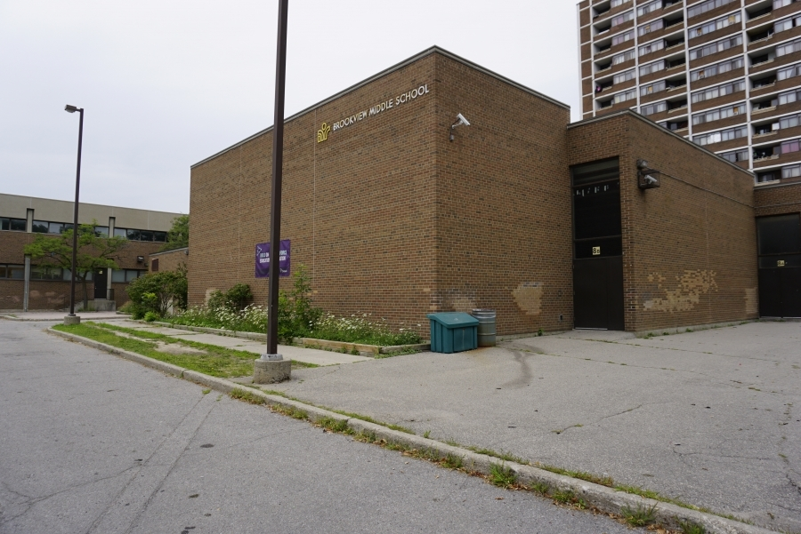

|
Tony La I am 22 years old, and is currently studying at York University in Toronto majoring in Business Economics. As of background, I am a mix between Chinese and Vietnamese and was born in Windsor, Ontario. When I have time outside of my academic life, I like to play League of Legends, and Lost Ark. I also enjoy listening to music. Some artists that I like to listen to are: Daniel Caesar, Clairo, Shan Yichun, and Men I Trust. YorkU Email / Personal Email / Highest Rank Reached on League of Legends / Highest Ilvl on Lost Ark / Github |

|
{kind=link}
{kind=link}
About MeThe following below will show a compilation of my interests and hobbies, and achievements I have earned throughout my life. |
|  |
Elementary School Achievements
The elementary school I went to was called Shoreham Public Sports and Wellness Academy. I received a Future Aces Award, and a Punctuality Award. The Future Aces Award is an award given to those who are deemed to be an example of excellence towards other students, and the Punctuality Award are given to those who are always on time to school everyday. |
 |
Middle School Achievements
The middle school I attended was called Brookview Middle School. I received a Junior Certificate of Accomplishment for 'Economics for Success', a Character Development of Empathy Award, and a Merit Award. The Junior Certificate of Accomplishment for 'Economics for Success' is a certificate given to juniors who participated in the practice of economics, the Character Development of Empathy Award are given to those who were deemed to show examples of empathy in the school environment, and the Merit Awards are given to those who had achieved a combined average of 71% to 79% in all learning skills and academic areas. |

|
Swimming Achievement
I have completed level 4 training of swimming during my middle school years, and always had a passion for swimming. After some time, I had acheived the 'Swim to Survive' Standard from the Lifesaving Society at York University. The 'Swim to Survive' Standard is achieved when an individual can roll into water, tread for 1 minute, and swim for 50 metres without failure. |
League of Legends Collegiate
I have played in LoL Collegiate twice, and made many long-lasting bonds and friendships with teammates. I have played for two seasons, one during 2021 at Seneca College, and another during 2023 at York University. I have a passion for this game and would love to continue to compete in this environment. |

|
Interests and Hobbies
As of interests, I am interested in the world of business and how businesses are operated. Learning about what goes into a business and how it could operate to the best of it's ability is very interesting to me (hence why I am majoring in Business Economics). I am also interested into the world of streaming, as some Twitch streamers like Sanchovies and Nickich are some that truely inspire me to want to stream, or to be integrated into. As of hobbies, I like to listen to music, play video games, swim, workout with the intent to body-build, take walks, and to sleep. |